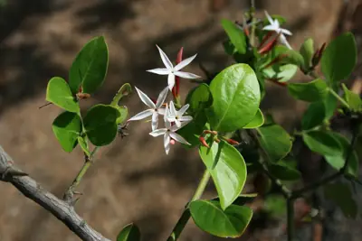

pranet · 出典付きの植物図鑑
カリッサ・スピナルム ☠
Carissa spinarum L. · Apocynaceae

Carissa spinarum, the conkerberry or bush plum, is a large shrub of the dogbane family (Apocynaceae), widely distributed in tropical regions of Africa, Southern Asia, Australia, and various islands of the Indian Ocean. It is most well known in Australia, where it is also called currant bush or, more ambiguously, native currant or even black currant. It is, however, neither closely related to plums (Prunus) nor to true currants (Ribes), which belong to entirely different lineages of eudicots. In India, it is also called wild karanda/wild karavanda, referring to the related karanda. Carissa spinarum is often discussed under its many obsolete synonyms.
出典: Wikipedia 英語版「Carissa spinarum」 · CC BY-SA 4.0
異名: Antura edules Forssk., Antura hadiensis J.F.Gmel., Arduina brownii K.Schum., Arduina campenonii Drake, Arduina edulis Spreng., Arduina inermis (Vahl) K.Schum., Arduina laxiflora K.Schum., Arduina xylopicron (Thouars) Baill., Azima pubescens Suess., Cabucala brachyantha Pichon, Carandas edulis Hiern, Carissa abyssinica R.Br., Carissa axillaris Roxb., Carissa brownii F.Muell., Carissa campenonii (Drake) Palacky, Carissa candolleana Jaub. & Spach, Carissa cochinchinensis Pierre ex Pit., Carissa comorensis (Pichon) Markgr., Carissa congesta Wight, Carissa coriacea Wall.
同定や利用は自己責任でお願いします。この図鑑だけを根拠に野生の植物を食べないでください。
出典
- 学名: World Flora Online Plant List 2026-06 · CC0 1.0
- 名前: Wikipedia の記事名と Wikidata · CC0 1.0（Wikidata）。記事名は事実
- 説明: Wikipedia 英語版「Carissa spinarum」 · CC BY-SA 4.0
- 食用・毒性: World Checklist of Useful Plant Species (Diazgranados et al. 2020, RBG Kew) · CC BY 4.0
- 分布: World Checklist of Vascular Plants (WCVP), RBG Kew, version 2026-06-04 · CC BY 3.0
このページは pranet のデータから自動生成しています。コードは MIT、データは項目ごとのライセンス（説明）。